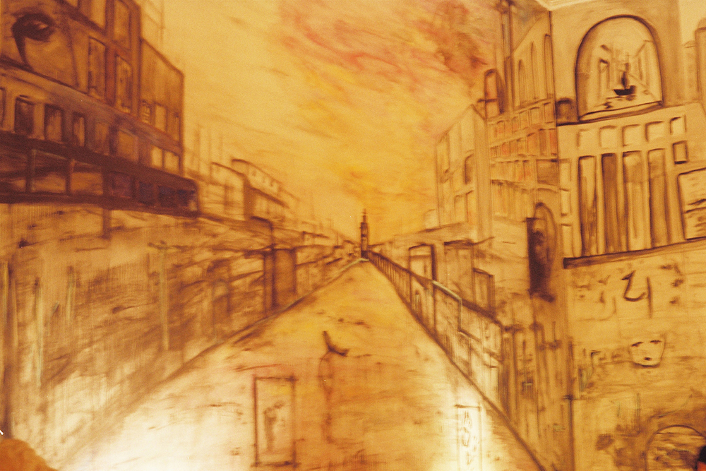

Couldn't find a creepy photo for the story, so here's a random one
Abrió los ojos y se encontró envuelto en penumbras. A medidas que sus ojos se acostumbraron percibió la silueta de la cama, la ventana y, en medio de todo, ella. Con cada respiro su cuerpo se ladeaba suavemente y le acercaba su perfume. Quiso acercarse y acariciarla, pero en su cuerpo no hubo siquiera un atisbo de movimiento. Sorprendido, volvió la atención a su propio cuerpo e intento con toda su voluntad mover un brazo, una pierna, el mas pequeño de los dedos pequeños. Nada, no había caso.
En ese momento supo que estaba dormido todavía. No le era posible saber si se encontraba en un sueño o si su mente en vela estaba apresada en un cuerpo inerte. Quiso hablarle, pedirle ayuda pero no solo le fallaron las palabras sino que sintio como comenzaba a fallarle el aire. Cada bocanada se topaba con una barrera cada vez mas impenetrable. Empezo a sentir una presion angustiante en el pecho, astillas en su garganta y un hormigueo que desato su desesperacion. Cuando su cabeza comenzo a nublarse, lo poco que quedaba de él se dijo: - Tengo que despertar
Intento con todo su ser sacudirse y bofetearse desde dentro...las siluetas empezaron a desvanecerse.
Se irguió como si su torso fuera a arrancarse del resto de su cuerpo. Su corazon latia con fuerza suficiente para destrozarle las costillas. A pesar del nudo que sentía en la garganta, sus pulmones nunca se habían llenado tanto de aire. Aún angustiado, se volteó en la cama y la llamó. Ella no despertó, y entonces notó que su perfume había desaparecido. Su cuerpo ya no se ladeaba.